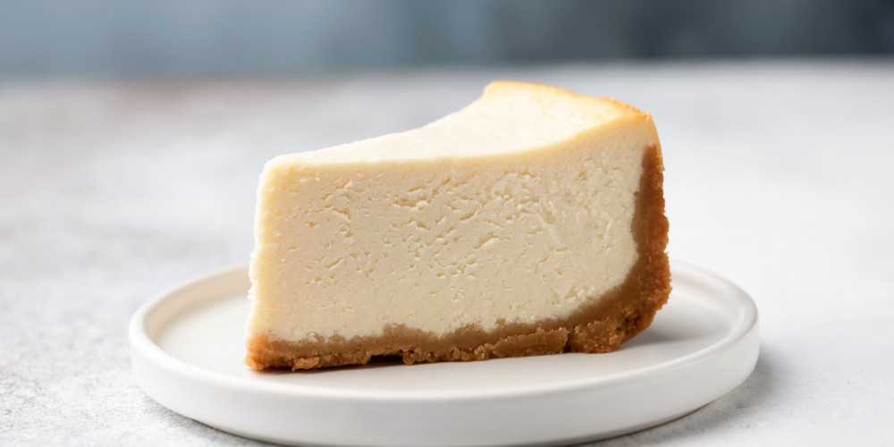
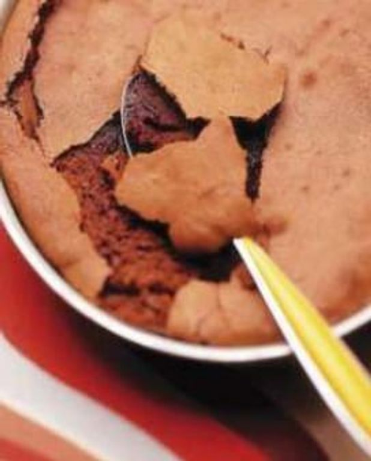
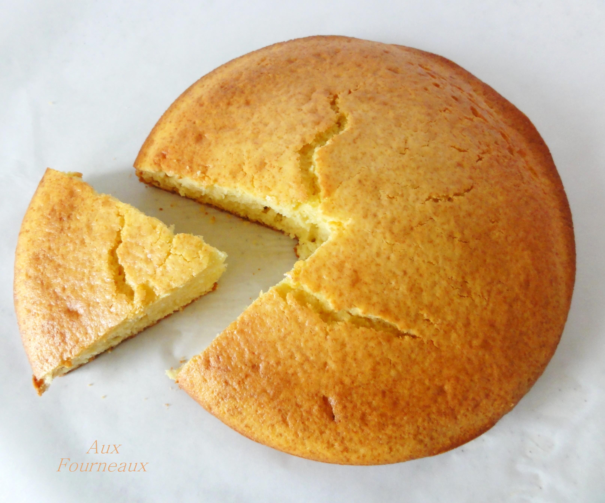
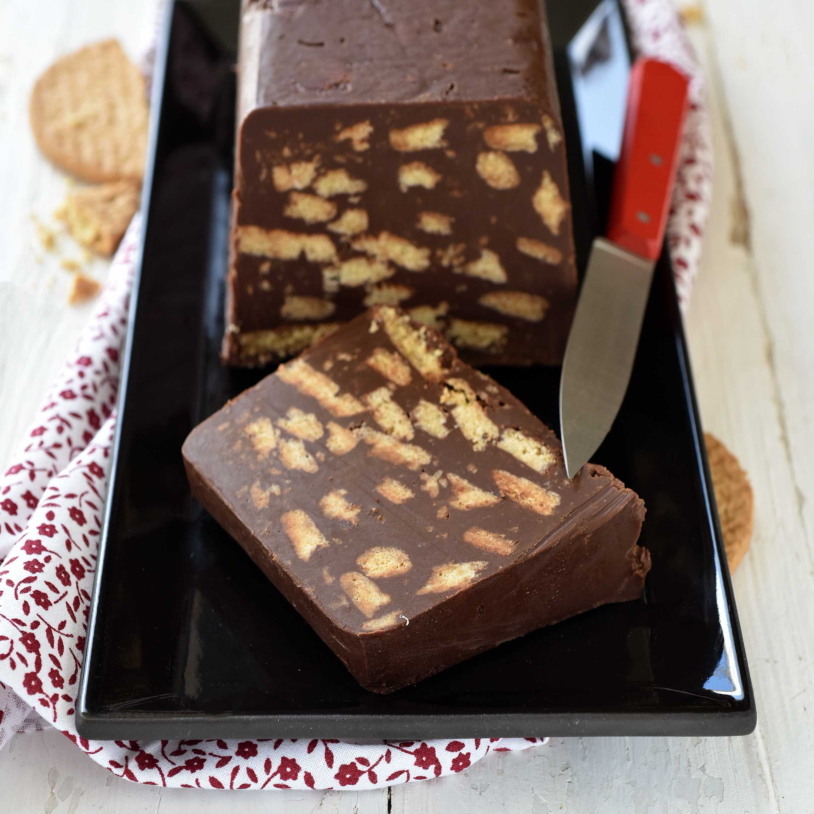

<h1 align="center">Mes recettes de gâteaux préférées</h1>

<table border align="center">
  <thead>
    <tr>
      <th>Gâteau</th>
      <th>Recette</th>
      <th>Temps de préparation</th>
    </tr>
  </thead>

  <tbody>
    <!-- Cheesecake -->
    <tr>
      <td></td>
      <td align = "center"><a target="_blank" href="https://www.hervecuisine.com/recette/cheesecake-citron/#">Cheesecake</a></td>
      <td><ul>
        <li>Préparation : 20min</li>
        <li>Cuisson : 1h10</li>
      </ul></td>
    </tr>

    <!-- Gateau au chocolat de mes filles -->
    <tr>
      <td align="center"></td>
      <td><a target="_blank" href="https://www.elle.fr/Elle-a-Table/Recettes-de-cuisine/Le-gateau-au-chocolat-de-mes-filles-551373">Le gateau au chocolat de mes filles</a></td>
      <td rowspan="2"><ul>
        <li>Préparation : 15min</li>
        <li>Cuisson : 30min</li>
      </ul></td>
    </tr>

    <!-- Gateau au yaourt -->
    <tr>
      <td></td>
      <td align="center" rowspan="2">Recette familiale</td>
    </tr>

    <!-- Gateau italien -->
    <tr>
      <td align = "center"></td>
      <td><ul>
        <li>Préparation : 15min</li>
        <li>Repos : au moins 6h</li>
      </ul></td>
    </tr>
  </tbody>
</table>
